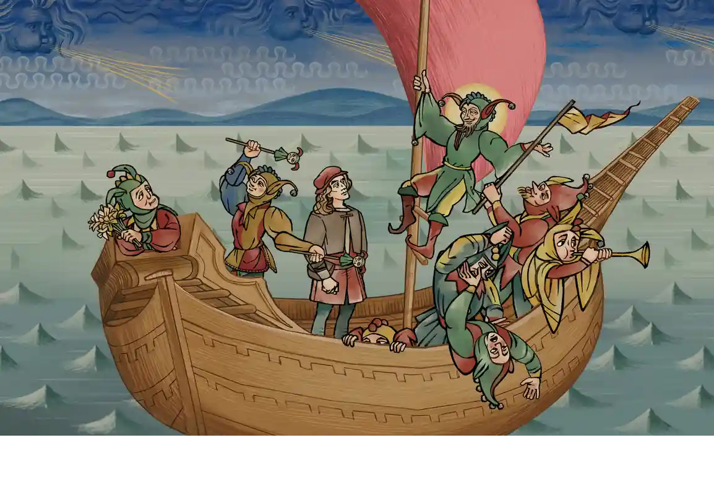
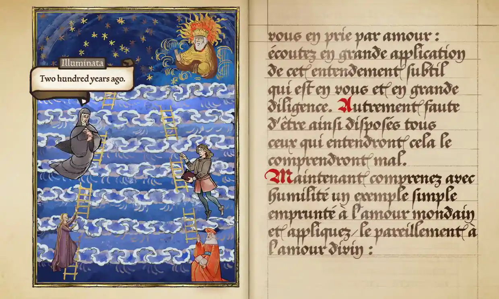

Games
Lewis packwood
Mon 14 Nov 2022 14.00 GMT

Pentiment review – a Renaissance murder mystery with an eye for historical detail
PC, Xbox; Obsidian Entertainment/Xbox Game Studios
An evocative recreation of 16th-century Bavaria examines how the tide of history crashes against the lives of everyday people, all framed by an intriguing crime story
Plenty of games have recreated historical places, but few even attempt to capture what it was actually like to live through these eras. Pentiment feels special because it excels at empathy. Its depiction of Renaissance Bavaria is remarkable in that it fosters a genuine connection with the ordinary people living, eating, working and dying through a period of tumultuous change.
This was a time which saw the rise of Protestantism following the radical teachings of Martin Luther, the popularisation of printed books, the uprising of peasants against cruel landowners and the blasphemous revelation that the Earth revolves around the sun. Much like the period we’re living through today, long-held certainties were questioned, and established orders were swept away.
Pentiment looks at how these changes dramatically affect the lives of folk living in a tiny Bavarian town. You play as Andreas Maler, a journeyman artist who takes a job illustrating manuscripts in the local monastery. The scriptorium is on the verge of obsolescence, as the new technology of the printing press is beginning to replace laboriously copying texts by hand. Maler’s world is soon turned upside down when a visiting nobleman is murdered in the monastery, and his friend and mentor, Piero, is accused of the crime.
Maler has only a few days to clear his friend’s name by gathering evidence on other possible suspects. He delves into the lives of the villagers, eating meals with them and uncovering long-held grudges and embittered attitudes towards those above them in the rigid 16th-century hierarchy. Religion holds sway over every aspect of their lives, but long-held pagan beliefs sometimes clash with Christian teachings.
Several people have plausible motives, and your relationships with the characters will change depending on whom you accuse and the choices you make along the way. The sheer number of characters in the game is overwhelming at first, but as the story continues to evolve over 25 years of the town’s history, you become deeply invested in the individual plights of these folk as they age and change. It’s almost like a 16th-century soap opera, with an enticing mystery at the heart of it all.
The ponderous pace will not be to everyone’s liking. The vast majority of your time will be spent clicking through reams of dialogue – which, in a lovely touch, is depicted in a way that represents the speaker’s social status. Humble peasant folk are captioned in scratchy handwriting, while the more well-to-do see their words rendered in grand script. Occasionally there will be a spelling mistake as the text is written out on the screen, which is hurriedly rubbed out and corrected. It’s one of many lovely flourishes that help to evoke the period, such as the way the screen zooms out to reveal the turning pages of an illustrated manuscript when you leave each scene.
Above all, what stands out is the developer’s deep knowledge of and love for the period. The dialogue drips with fascinating historical detail, supported by an extensive glossary of terms. That, combined with a focus on the minutiae of everyday people’s lives, results in a game that provides a wonderfully evocative window into the past. The glacial speed of progress and preponderance of text might be a barrier, but Pentiment is a gift to any player who longs for a historical setting that’s more than a surface texture.
Pentiment is out on 15 November for PC (version played here) and Xbox; £14.99
Most viewed
Musk sets up twitter poll asking if he should step down as head

Mixed reaction of Lionel Messi draped in Arab cloak before lifting the world cup
Jeremy Clarkson condemned over Meghan colunm in the sun